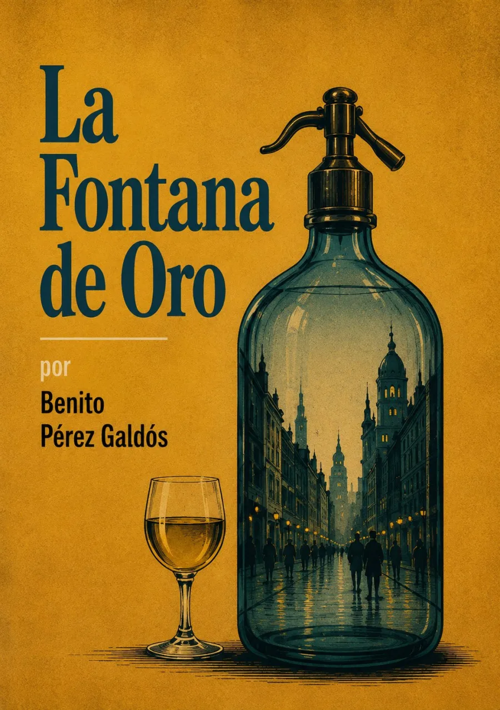

La política entra en la vida
Madrid, 1821. El café que da nombre a la novela es un lugar de encuentro y agitación: allí la elocuencia alimenta esperanzas, rivalidades y maniobras políticas. La ciudad entera participa en esa circulación de voces, desde los clubes hasta los comercios y las casas.
La libertad no solo se proclama en una tribuna: también se pone a prueba en las relaciones privadas.
La historia de Lázaro y Clara se cruza con un mundo de vigilancia, autoridad y conspiración. El narrador observa tanto el entusiasmo liberal como sus excesos y vulnerabilidades: importa quién habla, quién escucha y quién utiliza la palabra para dirigir a los demás.
El prólogo, fechado en diciembre de 1870, relaciona las tensiones de 1820–1823 con el presente del escritor; el capítulo inicial sitúa la narración en 1821. Son tiempos distintos: el de la historia y el de su escritura. Texto e índice: Biblioteca Virtual Miguel de Cervantes. La cabecera es una interpretación artística, no una reconstrucción documental del café.
La lectura
43 capítulos según el índice de la edición de referencia. Grabaciones pendientes de incorporación; los controles permiten seleccionar el capítulo.
Explorar los 43 capítulos
I · La Carrera de San Jerónimo en 1821
II · El club patriótico
III · Un lance patriótico y sus consecuencias
IV · Coletilla
V · La compañera de Coletilla
VI · El sobrino de Coletilla
VII · La voz interior
VIII · Hoy llega
IX · Los primeros pasos
X · La primera batalla
XI · La tragedia de los Gracos
XII · La batalla de Platerías
XIII · No llega el esperado. Llegada de un importuno
XIV · La determinación
XV · Las tres ruinas
XVI · El siglo decimoctavo
XVII · El sueño del liberal
XVIII · Diálogo entre ayer y hoy
XIX · El abate
XX · Bozmediano
XXI · ¡Libre!
XXII · El «vía-crucis» de Lázaro
XXIII · La Inquisición
XXIV · Rosa mística
XXV · Virgo Prudentísima
XXVI · Los disidentes de la Fontana
XXVII · Se queda sola
XXVIII · El ridículo
XXIX · Las horas fatales
XXX · Virgo Fidelis
XXXI · La reunión misteriosa
XXXII · La Fontanilla
XXXIII · Las arpías se ponen tristes
XXXIV · El complot. Triunfo de Lázaro
XXXV · El bonete del Nuncio
XXXVI · Aclaraciones
XXXVII · El «via-crucis» de Clara
XXXVIII · Continuación del «via-crucis»
XXXIX · Un momento de calma
XL · El gran atentado
XLI · Fernando el Deseado
XLII · Virgo Potens
XLIII · Conclusión
Reseñas

Excelente